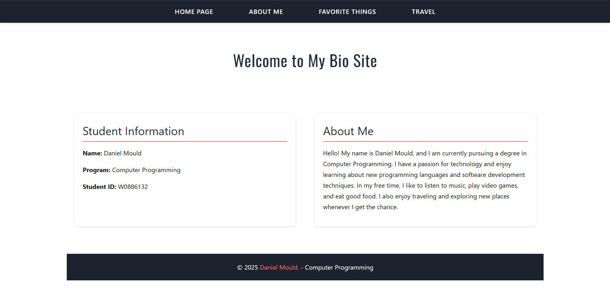
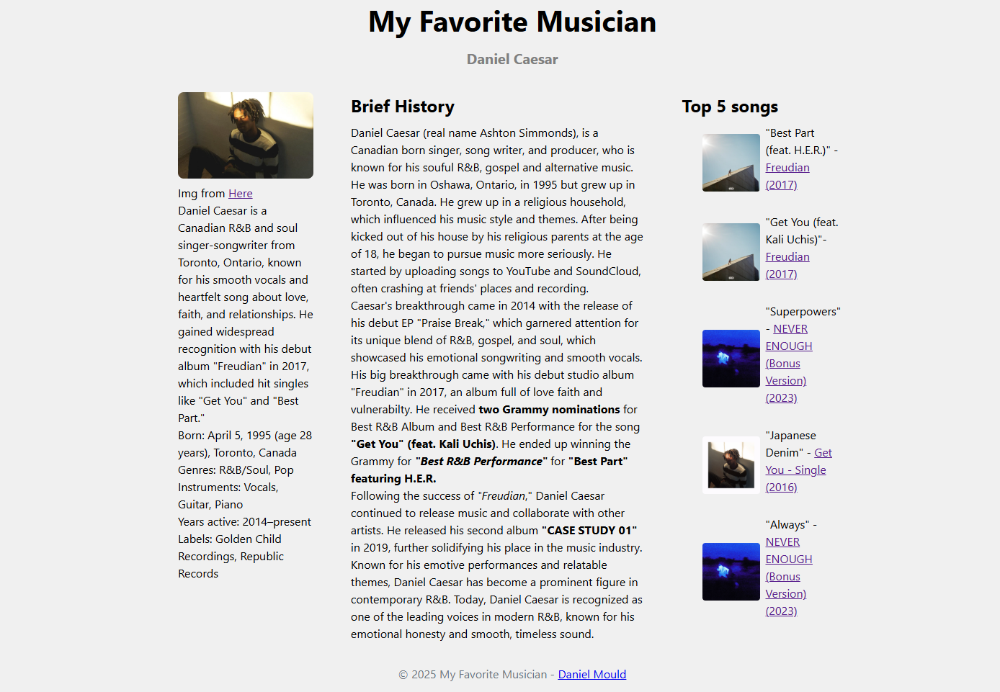
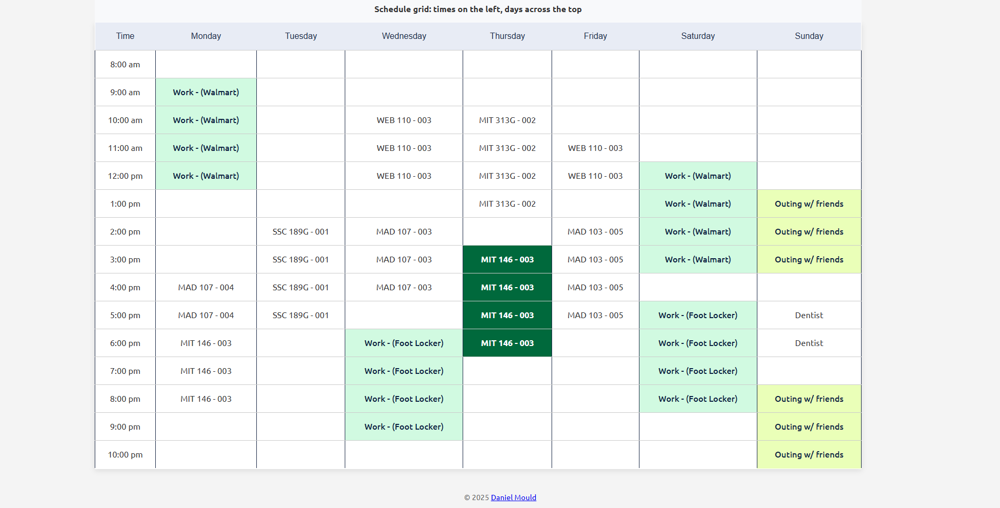

Welcome to the Projects page of my portfolio website. Here, I will showcase some of the projects and assignments that I have completed and enjoyed working on. These are my 3 favourite projects from this course. Each project will include a brief description, what I liked about it, and any challenges I faced during the development process.
-

First BIG project. - Screenshot by Daniel Mould This is the first major/big project I completed in this course. It involved creating a multi-page website with various topics about myself, including my hobbies, interests, background and places I have been to or would like to visit in the future.
I enjoyed this project because it allowed me to explore different aspects of web development, such as layout design, navigation structure, and content organization. It also allowed to express my creativity and personality through the website's theme and style. I hadn't thought about myself and what i like in a long time so it was nice to reflect on that. Overall, this project was a great learning experience and helped me develop my skills in HTML and CSS.
A challenge I faced during this project was ensuring that the website was functuional and visualling appealing to the audience. Organizing the content in a way that was easy to navigate and understand required a lot of deleting and reworking of the sections, navbar and images. However, I was able to work through it and create a website that I am proud of. Once I caught a ryhthm it became easier to make decisions on what to keep and what to delete as well as making minor to no errors in my code. Another challenge I faced was the CSS styling. It was challenging to organze the sections, navbar, and images in a way that was appealing to look at. Making the images and sections blend in well together so they dont feel out of place was difficult but started figuring it out after a while. Overall, this project is something I'm proud of and helped me have a greater understanding of how websites are created and designed.
-

Using columns for the first time. - Screenshot by Daniel Mould This project involved creating a webpage that utilized columns to organize content in a visually appealing way. The goal of the project was to created a website with columns about who your favourite band/musicians. I enjoyed this project because it allowed me to experiment with different layouts and designs using columns. I eventually settled with a three-column layout that looks like a book panel that displays information about my favourite band/musicians (Daniel Caesar).
Another aspect I liked about this project was learning more about Daniel Caesar, his music, and his journey as an artist. Researching and writing about his background and achievements was both informative and inspiring.
The most challenging aspect of this project was ensuring that the columns were properly aligned and spaced. Getting the content to fit within the columns without overlapping or looking cluttered, especially with images which took WHILE to figure out, getting the image to fit properly without messing up the rest of the layout and words was a struggle. The relief I felt when I finally got it to work was something that I won't forget for a while.
-

First time using tables. - Screenshot by Daniel Mould This project involved creating a webpage that utilized tables to organize and display data in a structured format. The goal of the project was to create a website that showcases a schedule of my classes for the semester (including name and the course code), outings with friends, and work shifts.
I enjoyed this project because of its practicality in real life. Creating a schedule using tables allowed me to see how tables can be used to organize information in a clear and concise manner. I also like the design aspect of the project, as I was able to experiment with different table styles and layouts to make the schedule visually appealing. I'm really particular about design and how things look so being able to make the table look nice was a fun experience. Getting acused of using ai to make it because it looked so good was funny to hear from friends.
One challenge I faced during this project was understanding how to properly structure the table using HTML tags. It took me reasearching and experimenting with different table elements to get the desired layout. What bugged me the most was getting the rows and columns to line up properly, especially when adding more data to the table, don't even get me started on adding the data itself, that was a nightmare to figure out at first. Another thing that annoyed me was getting the borders and spacing to look right, the repetitive code as well as the CSS styling to make it look nice. However, with practice and patience, I was able to overcome these challenges and create a functional and visually appealing schedule using tables.